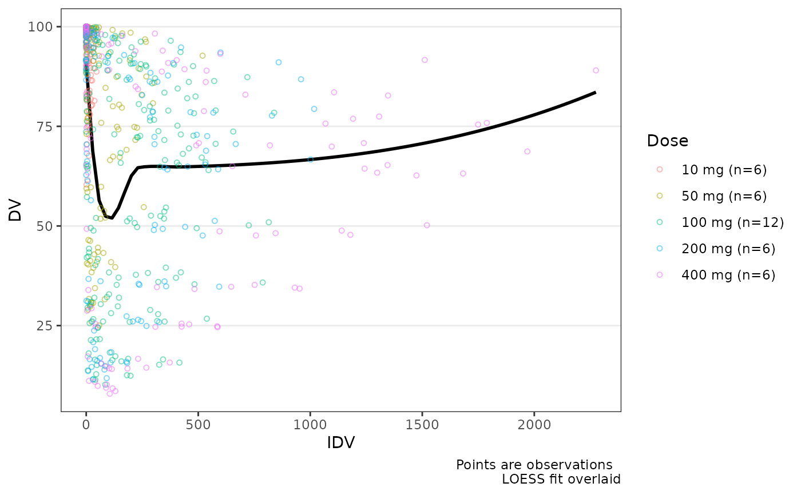

Unlike plot_dvtime() and plot_gof(), this function does not filter dose
rows internally. Pre-filter the input to observation rows (typically by
CMT or EVID == 0) before calling — see the example below.
Usage
plot_dvconc(
data,
dv_var = "DV",
idv_var = "CONC",
col_var = NULL,
col_trend = FALSE,
loess = TRUE,
linear = FALSE,
se_loess = FALSE,
se_linear = FALSE,
ref = NULL,
log_y = FALSE,
show_caption = TRUE,
theme = NULL,
...
)Arguments
- data
Input dataset. Must contain only observation rows (no dose records). Filter by
CMTorEVID == 0before passing.- dv_var
Column containing the dependent variable. Accepts bare names or strings. Default is
DV.- idv_var
Independent variable column. Accepts bare names or strings. Default is
CONC.- col_var
Column to map to the color aesthetic. Accepts bare names or strings. Default is
NULL.- col_trend
Logical indicating if the variable specified in
col_varshould be used to stratify trend lines- loess
Logical indicating if a loess smoother fit should be shown. Default is
TRUE- linear
Logical indicating if a linear regression fit should be shown. Default is
FALSE.- se_loess
Logical indicating if the standard error should be shown for the loess fit. Default is
FALSE- se_linear
Logical indicating if the standard error should be shown for the linear fit. Default is
FALSE- ref
Numeric y-intercept for a horizontal reference line, or
NULLfor no reference line. For example,ref = 0draws a baseline reference for change-from-baseline data.- log_y
Logical indicator for log10 transformation of the y-axis.
- show_caption
Logical indicating if a caption should be shown describing the data plotted
- theme
Theme object created by
plot_dvconc_theme(). Defaults can be viewed by runningplot_dvconc_theme()with no arguments.- ...
Additional arguments passed to
geom_smooth()
See also
Other exploratory analysis:
plot_dvconc_theme(),
plot_dvtime(),
plot_dvtime_theme()
Examples
data_sad_pd <- dplyr::filter(data_sad, CMT ==3)
data <- dplyr::mutate(data_sad_pd, Dose = var_addn(DOSE, ID, sep = "mg"))
plot_dvconc(data, dv_var = ODV, idv_var = CONC, col_var = Dose, col_trend = FALSE)
#> Warning: `col_var` colors observations but trend lines are not stratified. Set `col_trend = TRUE` to stratify trend lines by color.
#> `geom_smooth()` using formula = 'y ~ x'
